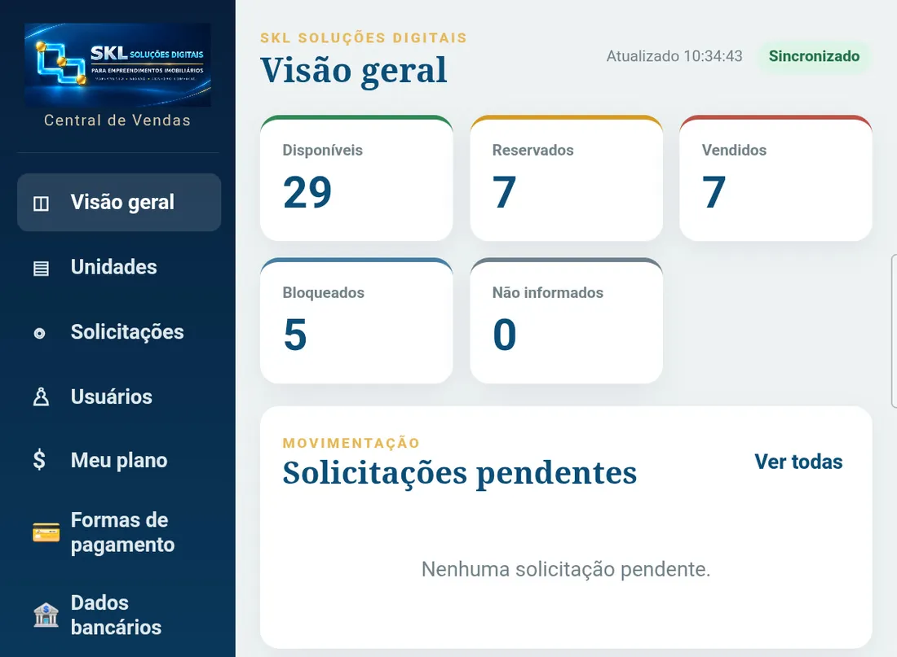
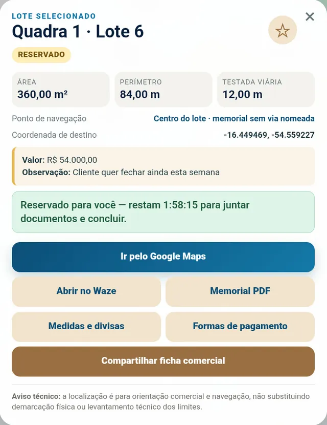
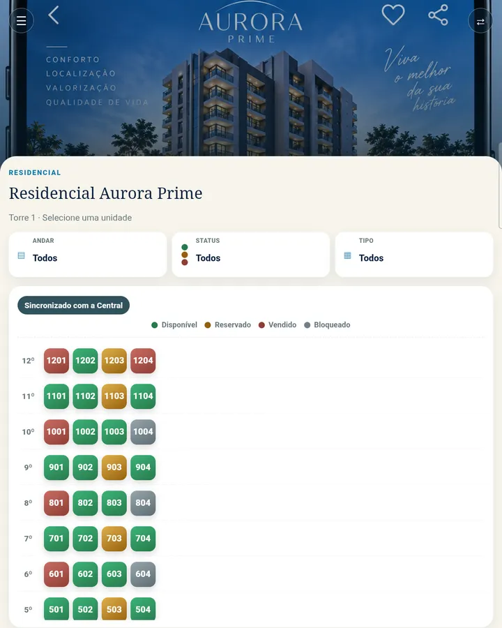
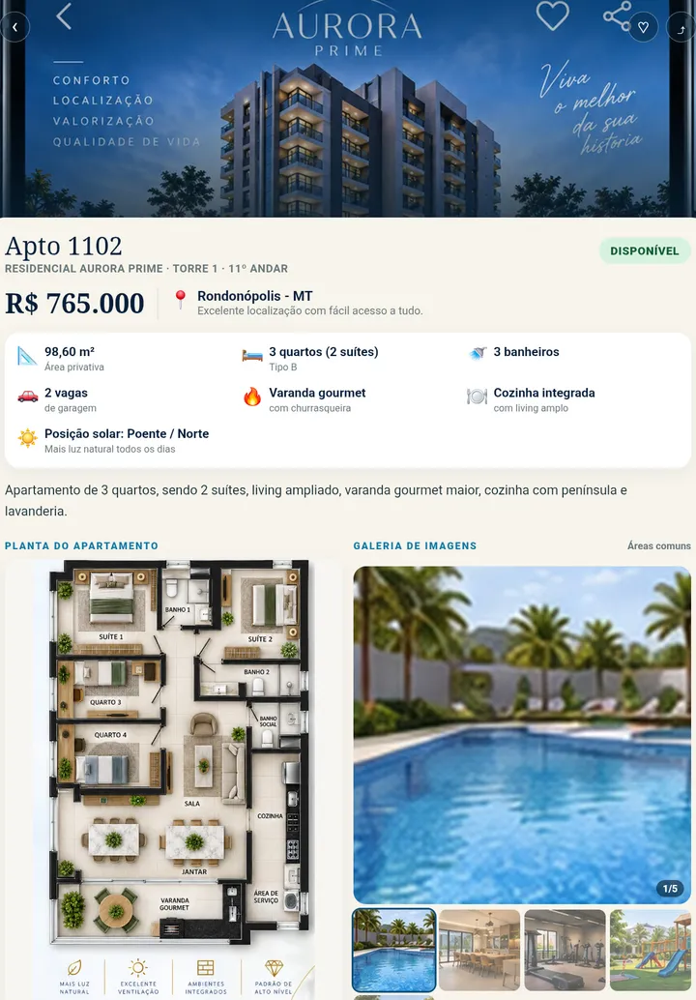
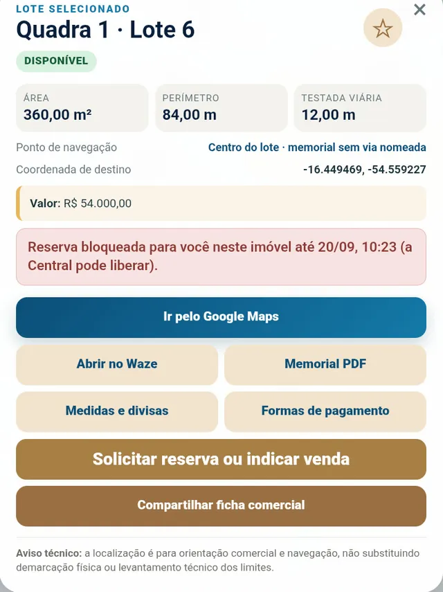
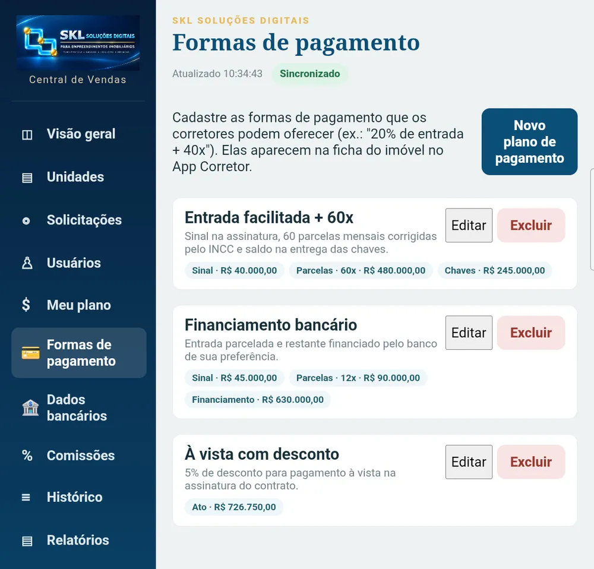
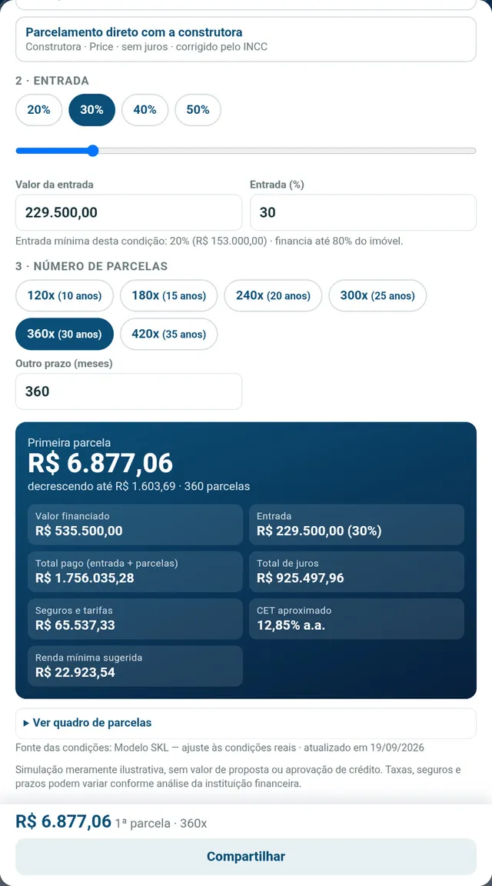
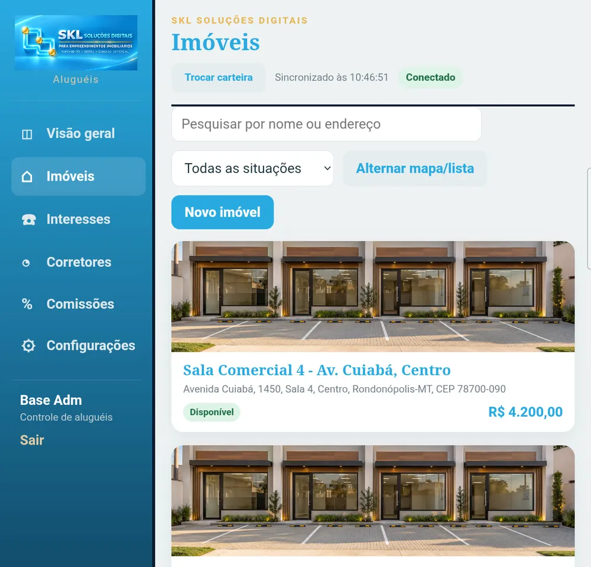

Um único estoque, ao vivo
Hoje: planilha, PDF e mensagem de WhatsApp com situações diferentes.
Com a SKL: todos veem a mesma situação de cada lote ou unidade no mesmo instante.
Plataforma de operação comercial e gestão visual de empreendimentos — sozinha ou integrada ao CRM que a empresa já usa. Acesso por iPhone, Android e computador.


A SKL Soluções Digitais une duas frentes complementares: uma plataforma de gestão comercial completa — para loteamentos, prédios e aluguéis — e serviços técnicos de agrimensura, como regularização fundiária, georreferenciamento urbano e rural e desmembramento ou remembramento de imóveis. Acompanhamos o empreendimento desde o levantamento em campo até a venda, com um único ponto de contato.
Em muitas operações, a informação do empreendimento está espalhada: o mapa em um arquivo, o preço em uma planilha, a situação no WhatsApp e o pedido de reserva por telefone. O corretor não sabe se o imóvel ainda está livre e a Central gasta o dia confirmando.
Hoje: planilha, PDF e mensagem de WhatsApp com situações diferentes.
Com a SKL: todos veem a mesma situação de cada lote ou unidade no mesmo instante.
Hoje: imóvel “preso” por reserva sem venda.
Com a SKL: prazos que a própria plataforma aplica, iguais para todos os corretores.
Hoje: o corretor liga para a Central para saber medida, valor ou onde fica.
Com a SKL: mapa, medidas, memorial, planta e rota em uma ficha.
Hoje: pedido, aprovação, contrato e comissão em ferramentas separadas.
Com a SKL: um fluxo só, com histórico.
Hoje: o funil e o desempenho da equipe dependem de planilhas.
Com a SKL: relatórios do estoque, das vendas e do tempo de resposta.
Hoje: ninguém sabe quem mudou o preço ou a situação.
Com a SKL: auditoria com quem, quando e o quê.
Sem servidor local. A plataforma roda na nuvem: a equipe só faz login. Atualizações chegam sem reinstalar no link do corretor.
A SKL une, em um só ambiente, a posição real de cada imóvel, seus dados técnicos e o processo comercial — estoque, mapa, ficha, formas de pagamento, simulação, reserva, contrato e comissão. Pode operar sozinha ou conectada ao CRM que a sua empresa já usa.
Estoque, mapa, solicitações, usuários, formas de pagamento, comissões, contratos e relatórios. Aplicativo para computador (Windows) e para tablet e celular Android.
Mapa, ficha técnica e comercial, simulador de financiamento, pedido de reserva e comissões. Acesso por link no iPhone, no Android e no computador.
Carteira de imóveis com fotos e mapa, interessados e gestão de corretores e comissões — no mesmo acesso.
A empresa não precisa abandonar o sistema que já usa. A SKL transforma os dados do empreendimento em uma ferramenta visual e operacional para a Central e para o corretor.
A SKL nasceu próxima da realidade de loteamentos e da organização espacial dos empreendimentos. Cada lote fica ligado à sua posição real, aos seus dados técnicos e ao processo comercial.
Mesma informação, ao mesmo tempo, para todos. O que a Central altera aparece na hora no app de cada corretor — sem atualizar planilha e sem mandar mensagem.

A unidade ligada à sua posição real. O cliente vê a planta, o andar e os acabamentos; o corretor apresenta e reserva sem sair da ficha.


Consulta rápida em campo: medidas, valor, memorial e navegação até o lote, direto do celular — sem depender de ligação para a Central.
Acesso por iPhone, Android e computador. No iPhone, o sistema abre por link e pode ser instalado na tela inicial como aplicativo web (não é aplicativo de loja). No Android, funciona pelo mesmo link e também pode haver versão instalável dedicada, conforme a implantação.

Sem regra, um corretor pode reservar lotes por tempo indeterminado — por engano ou para “guardar” imóveis na própria carteira — travando a venda para toda a equipe. O controle de tempo elimina isso sem ninguém precisar cobrar ou acompanhar.
O corretor só pode ter um pedido por imóvel. Enviou, o botão de reserva some para aquele imóvel.
A Central tem 20 minutos para aprovar ou recusar. Sem resposta, o pedido vence sozinho e o imóvel segue livre para todos.
Aprovada a reserva, o corretor tem 2 horas para juntar documentos e concluir, com contador regressivo na tela.
Não concluiu? O imóvel volta a Disponível automaticamente e aquele corretor fica 24 h sem poder reservá-lo — a Central pode liberar antes.
Controle na mão da Central. O quadro “Corretores bloqueados” mostra quem está impedido, em qual imóvel e até quando — com botão para liberar quando fizer sentido. Indicações de venda seguem permitidas durante o bloqueio.
Os tempos são configuráveis. Os valores exibidos (20 min · 2 h · 24 h) são o padrão sugerido: são parâmetros ajustáveis por empreendimento, conforme a política da empresa.

Simulação ilustrativa. Serve para apresentar ao cliente com dados reais da sua empresa. Não é proposta nem aprovação de crédito, e o aviso legal acompanha cada simulação. A integração automática com banco ou parceiro depende de acordo e acesso do parceiro.


Exemplos com dados fictícios de demonstração.
Um só acesso para vender e alugar. O mesmo login do corretor abre Vendas e Aluguéis: ao entrar, ele escolhe a linha — e troca quando quiser.

Controle total: usuários, plano, formas de pagamento, comissões, integração e configurações.
Operação diária: decide pedidos, altera a situação dos imóveis, gera contratos e relatórios.
Consulta, pede reservas e acompanha as próprias vendas e comissões. Nunca altera o estoque.
A SKL está preparada para integração com o CV CRM via API. Onde existe integração, o CRM continua sendo a fonte oficial de gestão e a SKL entrega esses dados como uma ferramenta visual e operacional para a equipe. Quem não usa CRM opera normalmente com a base própria da plataforma.
E se a sua empresa usa outro sistema? A integração já construída é com o CV CRM. Para outros sistemas o caminho é o mesmo — uma conexão via API, com o acesso liberado pela própria empresa — e é avaliado caso a caso, conforme o fornecedor ofereça API e o escopo combinado. Quando o sistema não tem API, avaliamos alternativas, como importação de dados por planilha. A SKL também funciona sozinha, com a base própria da plataforma.
A integração com CRM é um trabalho de implantação, orçado separadamente conforme o escopo. Este site não representa parceria, homologação ou certificação oficial com qualquer fornecedor de CRM. Marcas citadas pertencem aos seus titulares.
Além da plataforma digital, a SKL presta serviços técnicos de agrimensura: regularização fundiária, georreferenciamento urbano e rural (INCRA/SIGEF), desmembramento e remembramento de imóveis.
Levantamento e organização da documentação necessária para regularizar a situação legal do imóvel junto aos órgãos competentes.
Levantamento topográfico de precisão e certificação de imóveis rurais no sistema do INCRA (SIGEF), conforme a legislação vigente.
Divisão de um imóvel em duas ou mais partes, cada uma com matrícula própria.
União de dois ou mais imóveis contíguos em um só, com matrícula unificada.
Interface padrão SKL.
Logomarca, cores e nome da plataforma.
Material de apoio incluso. Guia de uso completo em PDF para a Central e para os corretores, e acompanhamento na entrada em operação. Integrações, importações complexas e módulos exclusivos são orçados à parte.
Cada operação é diferente. Você recebe uma proposta formal, sob medida, depois de uma demonstração com o seu empreendimento.
A mensalidade cobre hospedagem em nuvem, manutenção, suporte e atualizações do produto padrão. Vários empreendimentos, integrações (CRM, ERP, WhatsApp, portais, bancos), importações complexas, módulos exclusivos e customizações são orçados separadamente.
Não há servidor local: a plataforma roda na nuvem e a equipe só faz login. A Central de Vendas tem aplicativo para computador (Windows) e para tablet e celular Android. O corretor usa por link, no iPhone, no Android e no computador; no iPhone pode ser instalado na tela inicial como aplicativo web (não é aplicativo de loja).
Não. Onde existe integração, o CRM continua sendo a fonte oficial de gestão, e a SKL entrega esses dados como uma ferramenta visual e operacional. Quem não usa CRM opera normalmente com a base própria da plataforma.
Sim, para os três. Loteamentos com quadras, lotes, medidas e memorial; prédios com torres, andares, plantas e acabamentos; e a Central de Aluguéis para imóveis de locação. Vários empreendimentos podem ficar no mesmo login, cada um isolado do outro.
O corretor faz um pedido por imóvel; a Central tem 20 minutos para responder; aprovada, a reserva dura 2 horas para concluir a venda; se não concluir, o imóvel volta a Disponível e aquele corretor fica 24 horas sem reservá-lo. Esses tempos são o padrão sugerido e podem ser ajustados por empreendimento.
Cada pessoa tem login individual e permissões aplicadas no próprio banco de dados, e toda alteração fica na auditoria (quem, quando e o quê). Os recursos são projetados para apoiar o tratamento de dados conforme as políticas da empresa e a LGPD.
Começa com uma conversa e uma demonstração ao vivo. Depois vem a proposta, a configuração do ambiente, a carga dos dados, o treinamento da Central e dos corretores e o acompanhamento nos primeiros dias em operação.
Sim. Agendamos uma demonstração ao vivo, com o aplicativo em funcionamento, e você recebe uma proposta sob medida para a sua operação.
Agende uma demonstração ao vivo, com o aplicativo em funcionamento, e receba uma proposta sob medida para a sua operação.